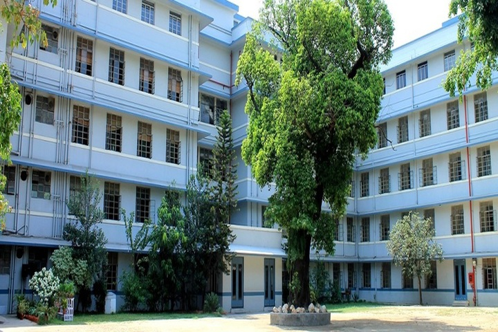

campus life
images
the school campus

school bulding
established in 1978
The school bulding is a large white and blue structure with several windows

school library
Was built in 1980
The school library has numerous books and we go to the library every Friday. There is a computer and screen on which we can view films and audiobooks.

school auditorium
Was built in 1982
Here, we have assembly meetings and new students come for their admission.There is a piano, and so the auditorium is often used for music classes.
school achievements
Inter School Debate On Environment Pollution
Won first prize in inter school debate on environment pollution
Our very own Deepa Chatterjee won first prize for an interschool debate. She strongly fought with her opponent from Dolna Day School. She talked about the terrible effects of pollution, and after a fierce battle, she won.
Inter School Football Competition

Came second in inter school football competition
Our team of strong willed girls led us to the silver position in the inter school football race.Our MHS team went against SSS (SriShikshayatanSchool)The end score was 2 to 3. Our mascots were all the flowers of the houses-Champak,Gulmohar,Hibiscus,Magnolia,Lotus,Orchid and Rose
Inter School Science Project Competition

Won second price in inter school Science Project competition
Again, Orchid House led us to silver in the science competion. Young budding scientits amazed the judges by creating an amazing concoction that not only made the volcano burst, but also changed it's color in the process!!
what's new?
-
New School Canteen

The food options and responsibilities to consider, canteens must be better organised and more efficient than they have been in the past. Online menus with photographs of the meals prepared, and detailed descriptions of their ingredients help both students and parents make the right nutritional choices. Each student or staff member who accesses the canteen could be provided with a School Canteen Account on the school website that keeps track of their previous meal choices and any dietary requirements they may have. Ordering online by ticking a box and paying for meals online can eliminate all the fuss of money handling, making it safer and less complicated for staff and students alike. Here again, diversity is the key.
-
Implemented Online Attendance Management System

1. Accuracy
Humans are prone to error, even if we provide them with supporting computational devices. Automated attendance management systems ensure accurate time records and minimize the inevitable and costly errors with manual data entry. This accurate data thereby helps to provide accurate performance and payroll data.
2. Economics
Have you ever thought that attendance management systems could control costs? It saves money by putting an end to inaccurate time reporting, buddy punching, absenteeism, tardiness, time abuse, and overpayment. As a matter of fact, a study done by the Axsium Group found that large organizations save up to $1,600 per employee after implementing automated attendance management systems.
3. Productivity / Efficiency
Monitoring and managing attendance manually can be a time-consuming, laborious, and expensive affair. It takes time to process paper sheets and time cards, create schedules, authorize leave and overtime, and create payroll manually. Free up precious administration time with an automated system that does it all for you, from keeping track of employee hours to automatically importing information into your payroll system. The time and effort saved combined with data accuracy helps in optimizing the use of resources which lead to increased productivity and improves profits. And many more like Visibility / Insights, Hassle Free Workflow Management, Flexibility, Integration / Configuration, Real-time tracking, Security, and Compliance
Alunmi
Dr Nandini Ray

school bulding
established in 1978
The school bulding is a large white and blue structure with several windows
school library
Was built in 1980
The school library has numerous books and we go to the library every Friday. There is a computer and screen on which we can view films and audiobooks.
school auditorium
Was built in 1982
Here, we have assembly meetings and new students come for their admission.There is a piano, and so the auditorium is often used for music classes.
school achievements
Won first prize in inter school debate on environment pollution
Our very own Deepa Chatterjee won first prize for an interschool debate. She strongly fought with her opponent from Dolna Day School. She talked about the terrible effects of pollution, and after a fierce battle, she won.
Came second in inter school football competition
Our team of strong willed girls led us to the silver position in the inter school football race.Our MHS team went against SSS (SriShikshayatanSchool)The end score was 2 to 3. Our mascots were all the flowers of the houses-Champak,Gulmohar,Hibiscus,Magnolia,Lotus,Orchid and Rose
Won second price in inter school Science Project competition
Again, Orchid House led us to silver in the science competion. Young budding scientits amazed the judges by creating an amazing concoction that not only made the volcano burst, but also changed it's color in the process!!
what's new?
New School Canteen
The food options and responsibilities to consider, canteens must be better organised and more efficient than they have been in the past. Online menus with photographs of the meals prepared, and detailed descriptions of their ingredients help both students and parents make the right nutritional choices. Each student or staff member who accesses the canteen could be provided with a School Canteen Account on the school website that keeps track of their previous meal choices and any dietary requirements they may have. Ordering online by ticking a box and paying for meals online can eliminate all the fuss of money handling, making it safer and less complicated for staff and students alike. Here again, diversity is the key.
Implemented Online Attendance Management System
1. Accuracy
Humans are prone to error, even if we provide them with supporting computational devices. Automated attendance management systems ensure accurate time records and minimize the inevitable and costly errors with manual data entry. This accurate data thereby helps to provide accurate performance and payroll data.
2. Economics
Have you ever thought that attendance management systems could control costs? It saves money by putting an end to inaccurate time reporting, buddy punching, absenteeism, tardiness, time abuse, and overpayment. As a matter of fact, a study done by the Axsium Group found that large organizations save up to $1,600 per employee after implementing automated attendance management systems.
3. Productivity / Efficiency
Monitoring and managing attendance manually can be a time-consuming, laborious, and expensive affair. It takes time to process paper sheets and time cards, create schedules, authorize leave and overtime, and create payroll manually. Free up precious administration time with an automated system that does it all for you, from keeping track of employee hours to automatically importing information into your payroll system. The time and effort saved combined with data accuracy helps in optimizing the use of resources which lead to increased productivity and improves profits. And many more like Visibility / Insights, Hassle Free Workflow Management, Flexibility, Integration / Configuration, Real-time tracking, Security, and Compliance
Alunmi
Dr Nandini Ray
Class of 1979. Dr. Nandini Ray is a specialist in cataract and glaucoma surgery. Her special area of interest is in PHACO Surgery, having performed 18,000 surgeries in Eastern India. Her success as a surgeon has brought her several awards including the Aparajita Award in 2012 in the field of Health and the IiRSI Special Gold Medal in 2016.
BEST BUY LINKS